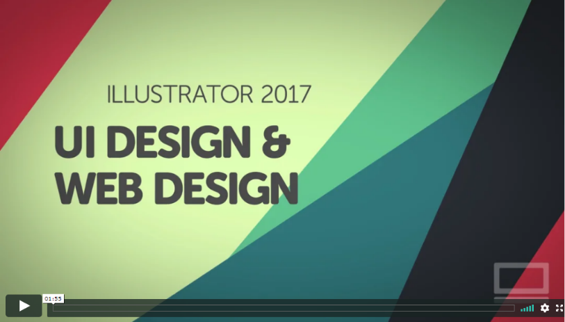
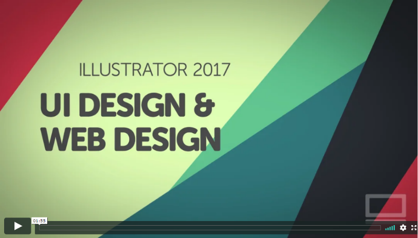

1. Introduction
2. Am I a UI UX designer now?
3. UI Design Photoshop vs Illustrator vs Sketch vs InDesign vs Adobe XP
4. What is Illustrator\'s role when designing a website
2. Am I a UI UX designer now?
3. UI Design Photoshop vs Illustrator vs Sketch vs InDesign vs Adobe XP
4. What is Illustrator\'s role when designing a website
OVERVIEW
5. Download the exercise files, completed files & cheat sheet
6. Getting your workspace & Illustrator preferences ready for UI work
6. Getting your workspace & Illustrator preferences ready for UI work
GETTING STARTED
7. Sitemap vs Wireframe
8. Creating a sitemap in Illustrator CC 2017
8. Creating a sitemap in Illustrator CC 2017
PLANNING
9. What screen sizes to use for desktop, tablet & mobile web design
10. What is a grid system & responsive mobile & tablet design
11. How to make a responsive 12 column grid in Illustrator
10. What is a grid system & responsive mobile & tablet design
11. How to make a responsive 12 column grid in Illustrator
12. Creating a wireframe - Low fidelity - hand drawn.
13. Creating a wireframe - High Fidelity - Illustrator
14. Creating the Tablet and Mobile wireframes in Illustrator
13. Creating a wireframe - High Fidelity - Illustrator
14. Creating the Tablet and Mobile wireframes in Illustrator
15. Inspiration for your web design
16. Starting your web design using Illustrator templates
17. Bring in your vector logo to the layout
16. Starting your web design using Illustrator templates
17. Bring in your vector logo to the layout
18. Color.Adobe.com
19. Matching brand colors using Adobe Illustrator
19. Matching brand colors using Adobe Illustrator
22. Free vs Royalty Free images
23. Adding Linking Cropping & Masking images in Illustrator
24. Washing out images in Illustrator with coloured background
25. How to use layers in Illustrator CC 2017
23. Adding Linking Cropping & Masking images in Illustrator
24. Washing out images in Illustrator with coloured background
25. How to use layers in Illustrator CC 2017
34. Export your full page web ui mockups from Illustrator CC 2017
35. Should I be using SVG export in Illustrator CC 2017 for web design
36. Exporting images and pictures from Illustrator CC 2017 for web
37. Exporting logos and icons from Illustrator 2017 for UI
38. Retina - HiDPI and responsive image export from Illustrator CC 2017
39. Exporting your UI for App design using Illustrator CC 2017
40. Exporting CSS for developers using Adobe Illustrator CC 2017
35. Should I be using SVG export in Illustrator CC 2017 for web design
36. Exporting images and pictures from Illustrator CC 2017 for web
37. Exporting logos and icons from Illustrator 2017 for UI
38. Retina - HiDPI and responsive image export from Illustrator CC 2017
39. Exporting your UI for App design using Illustrator CC 2017
40. Exporting CSS for developers using Adobe Illustrator CC 2017
41. Learning the language of UI user interaction design
42. How to get your first work as a UI designer
42. How to get your first work as a UI designer
43. Next steps to becoming an amazing UI designer
44. Your first project - Adobe Illustrator CC 2017
44. Your first project - Adobe Illustrator CC 2017
45. Cheat sheet - Adobe Illustrator CC 2017
32. Creating a tablet version of our UI web design in Illustrator CC 2017
33. Creating a mobile responsive UI website design in Illustrator CC 2017
33. Creating a mobile responsive UI website design in Illustrator CC 2017
SETTING UP YOUR FIRST PAGES
IT ALL BEGINS WITH WIREFRAMING
DESIGNING YOUR FIRST PAGE
COLOR
FONTS
IMAGES
CREATING SYMBOLS & ICONS
EXPORTING
WORKING AS UI DESIGNERS
NEXT STEPS
CHEAT SHEET
CREATING MOBILE & TABLETVERSIONS OF WEBSITES
>>
ILLUSTRATOR 2017 - UI Design & Web Design


SIGNUP
LOGIN
FAQ
CONTACT
RESOURCES
COURSES
HOME


Adobe Illustrator 2017 UI & Web Course - Introduction - Free
ALL ACCESS$19.95 per Month+ Cancel Anytime
Sign Up

Subscribe to download class files.
Subscribe to download completed files.


Questions & Comments
Video Transcription
Hi there, my name is Dan, and I\'m a Certified Adobe Instructor for Illustrator. In this video series we\'re going to use Adobe Illustrator to build a web and UI design project together. We\'ll use a real world project, we\'ll start with our portfolio. You know the portfolio, the one that you\'ve been planning to build forever but haven\'t got around to. Let\'s you and me build that now together.
I\'ve made this course for beginners. You don\'t really need any previous knowledge of Illustrator, or any other design experience.
We\'ll start with the super basics. It doesn\'t matter if you want to use Illustrator for app or web design, the techniques are the same. We\'ll go through the full user interface process. I\'ll show you how to use Illustrator to build a site map, and then create your first wireframes. We\'ll then begin to design our mobile tablet and desktop site using website fonts, colors, and responsive images. We\'ll create our own custom icons and logos, learning how to use the \'Pen\' tool, and the amazing \'Shape Builder\' tool.
By the time we\'re finished you\'ll know exactly what\'s expected of you as a UI designer, delivering responsive Retina images and CSS code, so that your wonderful web design is ready to produce perfectly as a website.
At the end of this tutorial series there is a project, it\'s got set tasks that you need to do for a fake client, and you can use this as part of your portfolio to help build that out. It\'s kind of like a homework, except that I\'m going to call it career development.
Alright, so it\'s time to upgrade your skills, get that bit of job, and push the heck out of your clients.
I don\'t know, they just start waving around when I start talking, like I\'m in a musical...
I\'ve made this course for beginners. You don\'t really need any previous knowledge of Illustrator, or any other design experience.
We\'ll start with the super basics. It doesn\'t matter if you want to use Illustrator for app or web design, the techniques are the same. We\'ll go through the full user interface process. I\'ll show you how to use Illustrator to build a site map, and then create your first wireframes. We\'ll then begin to design our mobile tablet and desktop site using website fonts, colors, and responsive images. We\'ll create our own custom icons and logos, learning how to use the \'Pen\' tool, and the amazing \'Shape Builder\' tool.
By the time we\'re finished you\'ll know exactly what\'s expected of you as a UI designer, delivering responsive Retina images and CSS code, so that your wonderful web design is ready to produce perfectly as a website.
At the end of this tutorial series there is a project, it\'s got set tasks that you need to do for a fake client, and you can use this as part of your portfolio to help build that out. It\'s kind of like a homework, except that I\'m going to call it career development.
Alright, so it\'s time to upgrade your skills, get that bit of job, and push the heck out of your clients.
I don\'t know, they just start waving around when I start talking, like I\'m in a musical...

1- Introduction
COURSE: Illustrator - UI & Web Design using Adobe Illustrator
VIDEO: 1 of 45
ALL ACCESS: $19.95 per Month + Cancel Anytime

Sign Up


Subscribe
Subscribe to our mailing list:
Enter Email Address
BECOME AN AFFILIATE
ENTER SEARCH TERMS